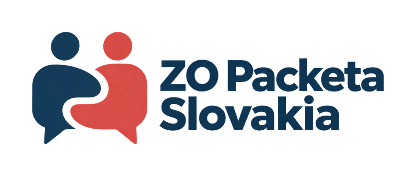

dôverný kontakt
Odboráčik online · základné odpovede
Odboráčik dáva všeobecné informácie, nie právne zastupovanie. Pri bezprostrednom ohrození zdravia alebo života volajte 112.

Odboráčik dáva všeobecné informácie, nie právne zastupovanie. Pri bezprostrednom ohrození zdravia alebo života volajte 112.